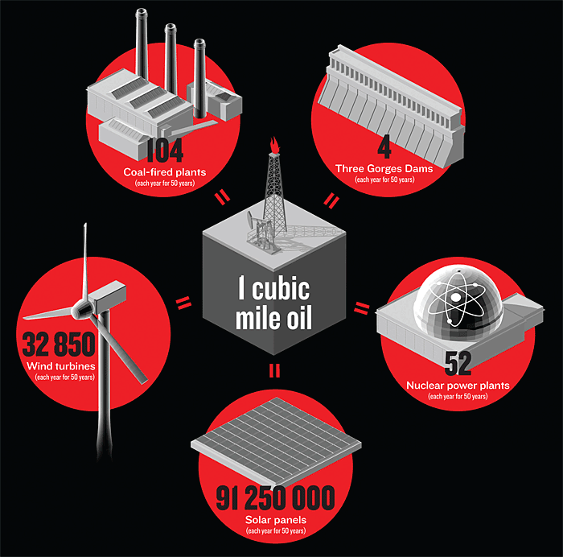

ocultar siempre |
ocultar ahora
ocultar siempre |
ocultar ahora
El mundo consume 45 Peta Vatios hora de petróleo anuales. Puede la eólica competir con estos órdenes de magnitud?.
Los avances de los últimos 10 años han reducido el precio de la energía eólica a la mitad. Qué nuevos avances se esperan?.
Tanto la pequeña escala como las grandes granjas eólicas jugarán un papel y presentan numerosas oportunidades.
 Esta página está bajo una Licencia Creative Commons Atribución-NoComercial 3.0 Unported.
Esta página está bajo una Licencia Creative Commons Atribución-NoComercial 3.0 Unported.
Lo primero que quiero transmitirles es la escla del
problema. El mundo consume cada año unos
Recapitulemos en 2 dimensiones, esta vez comparando con la eólica. Hay unos 600,000 aerogeneradores pequeños (de menos de 100kW) instalados por el mundo. Aerogeneradores domésticos, industriales, en granjas, etc. Y generaron el año pasado unos 300 GWh. Como una central nuclear funcionando 20 días, que no está mal. Pero la mayor contribución eólica viene de los parques eólicos grandes. Esta ya es una energía industrial que puede proporcionar entre 15% - 30% de la generación eléctrica de un país [como en España (17%) ó en Dinamarca (28%)]. Incluso algunos días del año pasado la eólica generó más del 50% de la electricidad Española. Pero volviendo a comparar con el petróleo se queda pequeño. Por ejemplo, con la base de datos de Vestas yo sumé cuánta energía han producido todos sus aerogeneradores durante los últimos 30 años. 30 años de historia, instalaciones, proyectos ... han sumado 0.4PWh aproximadamente. media centésima del combustible fósil anual (contando con el Gas y el Carbón). Con esto quiero darles una idea de la enormidad del problema. ¿Cómo vamos a sustituir esta energía?
Cuándo tomé consciencia por primera vez de la magnitud del problema pensé apaga y vamonos. Pero hoy les voy a enseñar que en este desafío hay grandes oportunidades.
Primero. Afortunadamente, las estimaciones del potencial eólico global varían entre 100 y 1000 PWh (La variabilidad de las estimaciones es muy grande debido a las diversas metodologías de estimación) [Lu,McElroy 2009, UD-Archer Article 2012, TOD Article Review, Jacobson-Archer (2012)] con lo que hay suficiente viento, al menos en teoría. Pero, ¿Cómo capturamos este potencial? Y, ¿cuál es el coste de este cambio?
La única manera de conseguirlo es primero ser
más eficientes. Pero en eólica es continuar el espectacular
crecimiento actual. Pese a la crísis financiera los
Megavatios de eólica instalada siguen doblando cada 4 años,
y en 2011 se instaló lo mismo que en los 10 años marcados
aqui (en gran parte gracias a China, el país lider en
instalación de MW). Si continuamos con este esfuerzo en 2040
se podría generar una cantidad similar al petróleo. Pero
cuánto cuesta este crecimiento? Cada año el mundo quema
De momento vamos por buen camino. El precio ha bajando en un 14% desde los 80. Y Aunque se saturó en Europa hace 10 años, los Chinos e Indios están reduciendo los precios aún más (desde €0.20/kWh (1984) hasta €0.05/kWh (2011)).
Magnitudes aproximadas:

Perú generó unos
Harían falta
El cubo equivalente en petróleo de la
producción hidráulica peruana mide aproximadamente:
Hay grán número de tecnologías que se están explorando en este momento (materiales, simulación, control, procesos de producción, automatización, monitorización inteligente de daños, alerones para palas, protección contra el hielo y los rayos, y un largo etcetera). Pero me centraré en 3 aspectos que creo que son innovadores e importantes.
Puede parecer una trivialidad que hace falta
más viento. Pero es importante subrayar el impacto que tiene.
Más que altas velocidades lo que hace falta es
certeza. Dejenmé ilustrarlo con un ejemplo
simplificado. Digamos que hemos encontrado un lugar excelente
con 9m/s de velocidad media. Fantástico, compramos las
máquinas más caras y nuestros cálculos nos indican que
recuperaremos la inversión en 7.5 años. Pero ahora resulta que
hay que cambiar el lugar. Tiene que ser 4 colinas más atrás,
con un pequeño valle de por medio, unos árboles y demás.
Aceptamos ... pero resulta que allí el viento es 7m/s. ¿En
cuánto recuperaremos la inversión? Más ó menos 15.9 años y si realmente hemos cometido un error y
son 6m/s?
¿Cómo ayuda la tecnología a traer certeza en el viento? Tal vez les sorprenda pero algunos de los ordenadores más potentes que hacen climatología y computación de fluidos están en empresas de eólica ó eléctricas. Encontrar lugares con recurso eólico y optimizar las posiciones de los aerogeneradores son problemas muy complejos que pueden costar cientos de millones de euros si se hacen incorrectamente. También modelos adecuados de turbulencia permiten ganar en rendimiento. Esa foto es en Horns Rev, una planta Danesa ... que tuvo casualmente un día en el que la temperatura, humedad y presión, crearon esa condensación detrás de la primera fila ilustrando cómo se puede perder energía y crear turbulencia si no se intercalan bien las filas. Otro avance tecnológico es el uso del láser para medir el viento. Un láser sobre la góndola rebota en las partículas de polvo del viento y nos dice: gira un poco a la derecha que el viento está cambiando, ó el viento trae muchas ráfagas y conviene frenar. Ahí se ve uno de los prototipos de Catch The Wind y yo mismo instalando un prototipo de otra empresa.
El segundo ámbito es el que recibe más
atención en la industria. Abaratar costes reduciendo el
peso. Y aunque parezca contradictorio lleva a aerogeneradores
cada vez más enormes y pesados. ¿Porqué? Si tenemos un aerogenerador
con palas de Radio =
Es decir, que si a una pala de 20m le añadimos 10 m,
aumentamos la potencia en un 225% (
Pero la reducción de peso no sólo ocurre a gran escala. Por ejemplo con el aerogenerdor de eje vertical q5 de quiet revolution han podido aligerar el diseño. La forma espiral de las palas reduce vibraciones y permite usar un eje más ligero.
(un problema tradicional de las VAWT (Vertial Axis Wind Turbines) son las vibraciones creadas por la entrada y salida de las palas en contra y a favor del viento. Con estudios de dinámica de fluidos se han podido establecer las ventajas de las palas en espiral que distribuyen las cargas mejor reduciendo al vibración).Finalmente una innovación radical y reciente para reducir peso ... es la eólica de grán altura. En este caso se trata de eliminar la torre y la góndola por completo. Con el beneficio añadido de que cuánto más alto más fuerte y constante es el viento. El viento transmite la mayor parte de su fuerza al exterior de las palas (más rápidas y por tanto con más "lift"). Así que han mantenido sólo esa parte con un pequeño avión dejando que el viento lo haga rotar. (ver imágen, Makani Aerogeneradores de gran Altitud [Makani en Vimeo] ). El cable está allí para traer la electricidad de las hélices a la tierra. Finalmente otro concepto es usar una cometa y dejar el generador en tierra.
Cualquier proyecto de energía a gran escala (para 7000 millones de habitantes) tiene consecuencias negativas. Por ello, si la eólica va a crecer mucho más tiene que empezar a pensar en su impacto desde el principio. Un caso fácil de mitigar con los avances tecnológicos son las colisiones con pájaros y murciélagos. Aunque el impacto es mínimo comparado con el impacto de edificios, coches ó cristales aumentará con el número de aerogeneradores. Una solución parcial son radares que avisan en época migratoria cuándo aparecen bandadas de aves. el tamaño y precio de éstos se está reduciendo rápidamente.
El siguiente avance tiene que ver con materiales sostenibles. Los aerogeneradores grandes están compuestos al 75% - 85% de acero. Así que esa parte es fácil de reciclar. Luego hay lubricantes, electrónica, y otros metales. Si se hace de manera responsable también se pueden recuperar y separar los residuos. Pero entre el 10% - 15% son resíduos complicados (las palas). Son resinas termoestables (Epoxy) con fibra de vidrio ó de carbono de difícil reutilización. Como en cualquier problema de reciclaje lo mejor es no utilizar los materiales conflictivos y hay investigación en holanda para usar termoplásticos en vez de epoxy que se pueda fundir y reutilizar más fácilmente [RP Article, S.Joncas Thesis ]. Aún así los residuos originarios de aerogeneradores retirados ó viejos son bastante pequeños comparados con los residuos urbanos. Si tomamos el ejemplo de Vestas con unos 40,000 aerogeneradores instalados y nos preguntamos cuánto residuo generarán en 10 años todos los generadores viejos no es mucho. El residuo que no es acero en 2023 será aproximadamente el mismo peso de residuo que genera el reino unido en media hora. [link from poster, upload poster]. Pero si sigue el crecimiento exponencial hay que pensar en este reciclaje y estos materiales sostenibles desde el principio.
Más viento, Más ligero, Más responsable.
¿Qué podemos hacer nosotros? En el próximo par de años la industria de fabricación de aerogeneradores va a estar en crísis. No veo grán oportunidad de trabajo. Los grandes Europeos y Americanos como Siemens, General Electric, Vestas, Gamesa están efectuando recortes de personal en casi todos los sitios. Incluso las empresas Chinas (Goldwing, Dongfang, ..) y Japonesas (Mitsubishi) han frenado su progreso. Por ello yo diría que si les interesa trabajar en el área de la energía eólica las oportunidades no están en los grándes fabricantes (durante unos años). Por comparación la eólica pequeña ha experimentado un 25% de crecimiento en los últimos 3 años y presenta grandes oportunidades. Además existen fabricantes locales (por ejemplo Waira en Perú). Otro área con grandes oportunidades son todas las areas y disciplinas que se unen para la manutención y optimización de parques existentes y nuevos parques.
{kind=link}